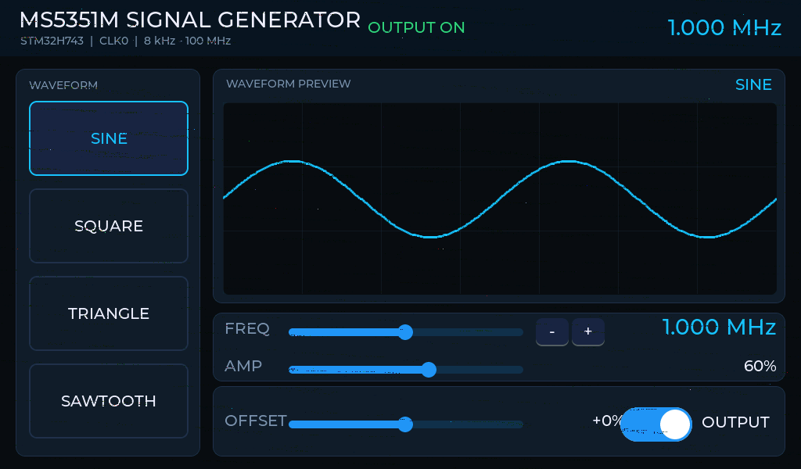

STM32H743IIT6 · LTDC 1024×600 RGB565 · LVGL 9.6.0 · GT911 · MS5351M
函数信号发生器
工程说明与调试存档
正点原子阿波罗 H7 开发板上的函数信号发生器：SDRAM 帧缓存 + LTDC 直驱 1024×600 屏、LVGL 9.6.0 全屏界面、GT911 电容触摸（软件 I2C）、MS5351M 时钟源。这份文档记录工程结构、可复现的构建烧写入口，以及屏幕 / 触摸 / 时钟三条链路的完整取证结论。
DISPLAY1024×600 正常
TOUCHGT911 @ 0x14
CLK SOURCE晶振未起振

实机画面，由 LTDC 帧缓存 0xC0000000 经 SWD 在线 dump 后按 RGB565 转成 PNG（1024×600）。这不是设计稿，是屏上真实显示的内容。
01 / OVERVIEW工程概览
整套系统跑在一棵由 CubeMX 生成的工程树（Core/）上，界面与外设驱动全部放在独立的 app/ 目录里，构建入口是与 CubeMX 无关的 Makefile.core。这样 CubeMX 重新生成工程不会覆盖任何手写代码，lvgl/ 目录也一个字节都不改。
MCU
STM32H743IIT6（Cortex-M7，480 MHz）
显示
LTDC 单图层 · RGB565 · 1024×600 · 帧缓存 0xC0000000
像素时钟
PLL3 M=1 N=6 P=2 Q=2 R=3 → 50 MHz
GUI
LVGL 9.6.0 · LV_DISPLAY_RENDER_MODE_PARTIAL · 堆 0x30000000 / 256 KB
构建
make -f Makefile.core -j8 → build_core/
固件
text 418792 · data 208 · bss 180432 字节
触摸
GT911 位操作 I2C · PH6/PI3/PH7 · 地址 0x14
时钟源
MS5351M · I2C1 · 地址 0x60 · 参考晶振未起振
02 / UI界面构成
全屏英文界面，Montserrat 14 / 20 / 28 三档字号，深色导航蓝底 + 青色强调，1024×600 单屏不滚动。
| 区域 | 内容 | 行为 |
|---|
| 顶栏 | 标题、OUTPUT ON / OFF 状态、大号频率读数 | 随开关与频率实时更新 |
| 左栏 | SINE / SQUARE / TRIANGLE / SAWTOOTH 四个波形按钮 | 点击切换选中态 |
| 中部 | 两周期波形预览（LVGL chart） | 跟随波形与幅度重绘 |
| 下部 | FREQ 对数滑条 + -/+ 步进、AMP、OFFSET、OUTPUT 开关 | 改频率会立即重写 MS5351M 分频 |
硬件事实，先说清
MS5351M / Si5351 是时钟发生器，只能输出方波，内部没有幅度控制，也没有直流偏置。因此界面上的波形选择与 AMP / OFFSET 对 CLK0 没有实际作用；要真的输出正弦、三角、锯齿并调节幅度与偏置，必须另加 DAC（H743 的 DAC1_OUT2 = PA5 目前空闲，PA4 被按键 Switch_3 占用）与后级模拟链路。
03 / HARDWARE硬件与外设
| 部件 | 型号 / 规格 | 接口 | 状态 |
|---|
| 开发板 | 正点原子阿波罗 H7 | — | 正常 |
| LCD | 7 寸 RGB 1024×600，RGB565 | LTDC + FMC SDRAM | 正常显示 |
| SDRAM | W9825G6KH 类 32 MB，bank1 映射到 0xC0000000 | FMC | 正常，刷新率 1667 |
| 触摸 | GT911 电容屏控制器 | 软件 I2C（GPIO 位操作） | 可用，地址 0x14 |
| 时钟源 | MS5351M 模块 | 硬件 I2C1，地址 0x60 | 通信正常；参考晶振未起振 |
| 调试 | ST-Link V2（SWD） | STM32CubeProgrammer CLI | 在线读写正常 |
SDRAM 上电序列 CubeMX 不生成，由 Core/Src/main.c 的 USER CODE 2 补齐：CLK_EN → 1 ms → PALL → AUTOREFRESH×8 → LOAD_MODE 0x0230 → HAL_SDRAM_ProgramRefreshRate(&hsdram1, 1667)。读回 SDCR1 = 0x39D9、SDTR1 = 0x01126361，与正常工作的参照工程一致。
04 / PINOUT引脚分配
下表取自 Core/Inc/main.h，为当前工程实际编译进固件的定义。
| 宏 | 引脚 | 用途 | 归属 |
|---|
| T_SCK_Pin | PH6 | GT911 SCL（位操作） | app/gt911.c |
| T_SDA_Pin | PI3 | GT911 SDA（位操作） | app/gt911.c |
| T_INT_Pin | PH7 | GT911 INT（输入，轮询） | app/gt911.c |
| LCD_BK_Pin | PB5 | 背光使能 | main.c USER CODE 2 |
| IIC_SCL_Pin | PH4 | CubeMX 原 I2C1 SCL，被释放为 ANALOG | app/i2c_bus.c |
| IIC_SDA_Pin | PH5 | CubeMX 原 I2C1 SDA，被释放为 ANALOG | app/i2c_bus.c |
| （运行时决定） | PB6 / PB7 | I2C1 SCL / SDA（AF4），MS5351M 实际应答的一组 | app/i2c_bus.c |
| Switch_2_Pin | PA3 | 板载按键 | CubeMX |
| Switch_3_Pin | PA4 | 板载按键（占用 DAC1_OUT1） | CubeMX |
| LED0_Pin / LED1_Pin | PB1 / PB0 | 板载 LED | CubeMX |
I2C1 的引脚自动探测
MS5351M 究竟接在 GPIOB 的哪两根线上，做过实测：按 SCL=PB8 / SDA=PB7 配置时整条总线无应答，芯片真正应答的是 PB6 = SCL、PB7 = SDA。为避免接线差异导致反复改代码，ms5351_init() 现在会依次尝试三组 I2C1 引脚对（PB8+PB7 → PB6+PB7 → PB8+PB9），用 HAL_I2C_IsDeviceReady() 探测 0x60，命中一组就锁定；结果记在 g_dbg.si_mask 的 bit24~26。
05 / STRUCTURE软件结构
E:\ms5351m
├─ Core/ CubeMX 生成（只改 USER CODE 区）
│ ├─ Src/ main.c fmc.c ltdc.c i2c.c gpio.c …
│ └─ Inc/ main.h ltdc.h i2c.h …
├─ app/ 手写代码，CubeMX 重新生成不会碰
│ ├─ app.c/.h 总入口、g_dbg 调试快照、主循环
│ ├─ bsp_lcd.c/.h MPU / PLL3 / LTDC / flush / 整屏填充
│ ├─ siggen_ui.c 1024×600 全屏 LVGL 界面
│ ├─ ms5351.c/.h 时钟芯片驱动 + 锁相扫描
│ ├─ i2c_bus.c/.h I2C1 引脚重定位与自动探测
│ └─ gt911.c/.h 触摸驱动 + 后台监管
├─ lvgl/ LVGL 9.6.0 源码，一个字节都不改
├─ lv_conf.h 配置（堆地址、双缓冲、渲染模式）
├─ lvgl_files.mk 474 个 LVGL 源文件清单
├─ Makefile.core 当前唯一构建入口
└─ docs/ 本说明文档与截图存档
启动顺序
main.c USER CODE 2：SDRAM 上电序列 → 背光 PB5 拉高 → 四色带填充验证 → app_init()app_init()：bsp_lcd_init()（MPU / PLL3 / LTDC / 图层配置 / LVGL display）→ siggen_ui_create() → gt911_init() → ms5351_init()main.c 主循环 USER CODE 3：app_process() → lv_timer_handler() + gt911_service() + 欠载计数ms5351.c 的 #include "i2c_bus.h"：不改 CubeMX 的 hi2c1，只重写引脚并 HAL_I2C_DeInit/Init
LVGL 关键配置
| 项 | 值 / 说明 |
|---|
| LV_MEM_ADR | 0x30000000（内部 D2 SRAM，256 KB） |
| LV_MEM_SIZE | 256 KB。曾把堆放到 SDRAM，运行必然被 TLSF 判为越界并崩溃 |
| 渲染模式 | LV_DISPLAY_RENDER_MODE_PARTIAL，双 draw buffer 1024×40，位于 .ltdc_draw_buf（NOLOAD，AXI SRAM） |
| 编译定义 | -Ilvgl -I. -DLV_CONF_INCLUDE_SIMPLE，lv_conf.h 放工程根目录 |
| flush | 逐行 memcpy 到帧缓存后按 32 字节扩边 SCB_CleanDCache_by_Addr |
06 / BUILD构建、烧写与在线取证
根目录那个 CubeMX 生成的 Makefile 不要用：它同时列了 Src/ 与 Core/Src/ 两套源文件，两边 syscalls.c 都定义 __env，必然报多重定义；有时还会因为 build/ 里的产物比源码新而输出 Nothing to be done for 'all'。统一走 Makefile.core。
# 编译（工具链必须在 PATH 里，切勿额外设置 GCC_PATH）
$env:Path="D:\arm-gnu-toolchain-14.2.rel1-mingw-w64-i686-arm-none-eabi\bin;D:\GNU MCU Eclipse\Build Tools\2.12-20190422-1053\bin;" + $env:Path
make -f Makefile.core -j8
# 烧写（UR 模式会复位）
STM32_Programmer_CLI -c port=SWD mode=UR -w build_core\ms5351m_core.elf -v -rst
# 读在线 RAM / 寄存器必须用 hotplug，UR 会把数据清掉
STM32_Programmer_CLI -c port=SWD mode=hotplug -r32 0x200007E8 80
# g_dbg 地址随代码变化漂移，每次用 nm 现查
arm-none-eabi-nm build_core\ms5351m_core.elf | findstr " g_dbg"
# 帧缓存抓图：把屏上真实画面导出成 bin，再转 PNG
STM32_Programmer_CLI -c port=SWD mode=hotplug -u 0xC0000000 1228800 dump\fb_now.bin
python dump\fb2png.py
VSCode 里 Ctrl+Shift+B 也可用：.vscode/tasks.json 已配好 build / clean / flash 三个任务，默认任务指向 Makefile.core。探针互斥要记住：调 OpenOCD 前先结束 STM32_Programmer_CLI，反之亦然。
g_dbg 调试快照
所有状态通过 SWD 读一个结构体就能看到，不需要串口。最近一次实测地址 0x200007E8，magic 0x53504731（"SPG1"）。
| 字段 | 含义 |
|---|
| magic / lvgl_ok / flush_cnt / ui_ok | LVGL 初始化、flush 次数、界面是否建好 |
| touch_addr | GT911 命中的 7 位地址，0x14 即就绪 |
| touch_x / touch_y | 最近一次触摸坐标 |
| si_ok / si_lock / si_status / freq_hz | MS5351M 在线、锁相、原始状态字节、目标频率 |
| gt_id | 从 0x8140 读回的产品 ID，实测 0x39313100（"911"） |
| gt_ack | 位图：bit20/21 SDA 驱动自检、bit22/23 SCL 驱动自检、bit16~19 释放电平 |
| si_mask | 位图：bit0~3 四种晶振负载电容、bit4~17 晶振×VCO 组合的锁相结果、bit24~26 命中的 I2C 引脚对 |
| gt_scan / gt_int_low / gt_pins | 后台重试探次数、INT 低电平采样数、三根线电平 |
07 / DISPLAY屏上雪花：取证过程
这一节是整份文档里最值得留存的部分：帧缓存 dump 每次都是对的，屏上却是雪花，最后在面板端才找到原因。过程按顺序记录下来，避免后人重走。
步骤 1
先把帧缓存本身的可见性做对
MPU Region0（0xC0000000 / 32 MB）由 TEX_LEVEL1 + 非 cache 改为 MPU_TEX_LEVEL0 + CACHEABLE + BUFFERABLE；flush 逐行 memcpy 后按 32 字节扩边 SCB_CleanDCache_by_Addr。
步骤 2
加 LTDC 欠载计数
LTDC->ISR & LTDC_ISR_FUIF 计数写进 g_dbg，用来判断是不是 SDRAM 带宽不够。结果恒为 0，排除带宽问题。
步骤 3
分层隔离：纯色 / 关层 / DMA2D
模式 1 CPU 纯色循环仍是雪花；模式 2 关层只出背景色，变成纯黑；模式 3 照搬参照工程的 DMA2D 填纯绿还是雪花。逐步排除「绘图代码写坏」。
步骤 4
用能正常显示的固件当金标准，逐寄存器比对
烧参照工程 Panda.hex → 屏正常，证明硬件全好。逐项比对固件：LTDC 全局区、图层 0 全部寄存器、FMC SDRAM（SDCR1=0x39D9 等）、全部 LTDC 引脚 AF14 —— 全部一致。只有像素时钟不同：我方 PLL3R 被 HAL_LTDC_MspInit 覆盖回 5（25 MHz），已用 0x58024440 读回确认真实值 0x02010205（50 MHz）。
步骤 5
真正的根因：第二图层
读 0x50001104（图层 2 的 CR）发现硬件里 CR=0x00000001 处于使能、CFBAR=0xC0200000 指向一块从未绘制过的空白 SDRAM，以上电随机内容、alpha=255 全屏叠在图层 1 之上 → 满屏雪花。__HAL_LTDC_LAYER_DISABLE() 只改 RAM 结构体不写寄存器，所以从来没生效。改为直接写 LTDC_Layer2->CR = 0，再 SRCR = LTDC_SRCR_IMR 立即重载，读回 0。
收口
最后用可信的 .ioc 重新生成工程（只有一个 LTDC 图层、PLL3R=3），新树配 Makefile.core 先烧色带测试，再做全屏界面 —— 实机确认正常显示。结论：.ioc 本身没问题，老工程的两处差异（多一个使能的第二图层 + PLL3R=5）才是病因。
08 / TOUCHGT911 触摸
18 个字段里的 gt_ack 与 gt_pins 就是为这条链路准备的诊断位。最终实测：芯片在 7 位地址 0x14 应答，产品 ID 读回 "911"，用户实机确认触摸可用。
之前「全地址零 ACK」的真正原因
GT911 上电后要等远超 100 ms 才第一次应答。早期在 app_init() 里一次性探测（复位后仅等 60 ms），结果是 0x08~0x77 全地址 NACK，看起来像接线错或芯片坏。现在改成三段式：gt911_init() 里 40 × 50 ms 轮询等待 → 仍未通再走 4 组复位/INT 组合兜底 → gt911_service() 在后台每 200 ms 重试探一次并一直采样 INT。
实现要点
- 位操作 I2C，半周期
GT911_DELAY_US = 20 µs（约 25 kHz），适配 7 寸 FPC 只靠内部上拉的情况
- 引脚宏兼容两棵工程树：有
T_SCK 就用 T_SCK / T_SDA / T_INT，否则退回旧树的 SCL / SDA / INT / RST；新树没有 RST 脚，GT911_HAS_RST = 0
- 寄存器：产品 ID
0x8140，状态 0x814E（bit7 有效、低 4 位点数、坐标在 buf[2..5] 小端、读完写 0 清标志）
- 驱动自检：SDA 拉低能读回 0、放开能读回 1（
gt_ack bit20/21），SCL 同理（bit22/23）——先证明引脚是自己的，再去怪芯片
09 / CLOCKMS5351M 时钟源
I2C 通信、寄存器写入都不是问题，问题在参考时钟。下面是实测到的寄存器回读值，全部读自片内，不是写入宏。
正常模式下的回读（设定 1 MHz 输出）
| 寄存器 | 回读值 | 含义 |
|---|
| 26~33 | 00 01 00 10 00 00 00 00 | PLLA：P3=1、P1=0x1000=4096 → 25 MHz × 36 = 900 MHz VCO，整数模式 |
| 16 | 0x4F | CLK0：MS 源、8 mA、整数模式 |
| 187 | 0x10 | Multisynth fanout 使能 |
| 3 | 0xFE | CLK0 输出使能 |
| 183 | 0x40 | 晶振负载 8 pF |
| 15 | 0x00 | PLL 参考源 = XTAL |
| 0 | 0x61 / 0x69 / 0xE1 | Device Status：LOL_A（bit5）恒为 1 |
晶振直通判定
为把「软件配置错」和「参考时钟缺失」分开，专门编了一版诊断固件（-DMS5351_XTAL_TEST=1）：绕过 PLL 与 MultiSynth，让 CLK0 直接由晶振经 fanout 输出，写 reg187 = 0x50、reg16 = 0x03、reg3 = 0xFE。烧写后读回 183 / 187 / 16 / 3 / 0 / 15 = 0x40 / 0x50 / 0x03 / 0xFE / 0xE1 / 0x00 —— 配置确实落片。
结论：参考时钟缺失，属硬件
CLK0 直通晶振这一档示波器上没有任何波形，同时 reg0 的 bit7（SYS_INIT）卡在 1 —— 芯片自己在等参考时钟。此前的 2 种晶振 × 7 个 VCO（600~900 MHz）× 4 种晶振负载电容全部组合都用 LOL_A 判过，一个都没锁。示波器上曾读到的 31.7 / 33.9k / 44k 乱跳数字，是 PLL 无参考、未锁时的杂波，不能用来反推分频比。
这块片子还在另一个坑上：状态位不可信
reg0 的 bit3 会跟着 reg183 的 bit7 一起翻（CL 码 0x40/0x00 时 bit3=0，0x80/0xC0 时 bit3=1），bit4（LOS）恒 0，bit5/bit6（LOL）恒 1。整字节像是克隆片内部合成出来的，所以不能拿它当判据。界面上的 PLL LOCKED / UNLOCKED 文案已改成 OUTPUT ON / OFF，真实状态只留在 g_dbg.si_status / si_lock 里。
修复路径（按成本排序）
| # | 做法 |
|---|
| 1 | 10× 探头量模块 XA 脚：有 25 MHz 正弦摆幅 → fanout 配置问题；死平 → 晶振或芯片 XO 问题。这一步能把「晶振坏」和「芯片坏」分开。 |
| 2 | 换一颗带 25 MHz 晶振的 SI5351A 正品模块。现有驱动已做 I2C 引脚自动探测，换模块不必改代码。 |
| 3 | 救现有模块：用 STM32 的 MCO 或 TIM 出 25 MHz，经约 10 nF 耦合到 CLKIN / XA，并把 reg15 改成 CLKIN 源（写 0x0C）。需要飞线，属硬件改动。 |
10 / OPEN ITEMS已知问题与后续规划
待修
- MS5351M 参考晶振不起振（硬件侧修复中）。修好后无需改代码：驱动会重新扫
LOL_A，命中即停，并把 g_dbg.si_mask 对应位置 1。
- 晶振修好后要确认真实频率是 25 还是 27 MHz —— 驱动目前按 25 MHz 优先、27 MHz 兜底；若实测是 24.576 MHz 一类非标值，需要把
kXtal[] 改成实测值。
功能缺口（硬件限制，不是 bug）
- 正弦 / 三角 / 锯齿、幅度、偏置：MS5351M 做不到，需要 DAC。建议路径：H743 内置 DAC（
DAC1_OUT2 = PA5，PA4 已被按键占用）+ DMA 查表 + 后级运放，覆盖约 0~100 kHz；高频方波继续由 5351 负责。
- 界面右下 OUTPUT 开关与 OFFSET 数值文字存在轻微重叠，属于布局细节，可在
siggen_ui.c 里调整坐标。
CubeMX 重新生成前要复查的地方
STM32H743xx_FLASH.ld 里的 .ltdc_draw_buf (NOLOAD) 段不在 USER CODE 区，重新生成会丢，丢了会链接溢出。- 重新生成后立刻读一次
0x50001104（图层 2 的 CR），如果又变成 1，雪花会立刻回来。
main.c 的 SDRAM 上电序列与背光、app_init() / app_process() 都在 USER CODE 区内，安全。- 手写代码一律不进
lvgl/、不写在 USER CODE 区外。
11 / CHEATSHEET地址与寄存器速查
| 对象 | 地址 / 值 | 备注 |
|---|
| LTDC 图层 1 基址 | 0x50001084 | CR / WHPCR / WVPCR / PFCR / BFCR / CFBAR / CFBLR / CFBLNR |
| LTDC 图层 2 基址 | 0x50001104 | 雪花的元凶就在这，CR bit0 必须为 0 |
| PLL3 分频寄存器 | 0x58024440 | 偏移 0x40，实测 0x02010205 → 50 MHz 像素时钟 |
| 帧缓存 | 0xC0000000 | 1024×600 RGB565 = 1,228,800 字节 |
| FMC SDRAM 控制 | 0x52004140 / 0x52004148 | SDCR1 读 0x39D9，SDTR1 读 0x01126361；0x52004144 是 bank2 SNCTL，不要写 |
| LVGL 堆 | 0x30000000 | 256 KB，内部 D2 SRAM |
| GT911 寄存器 | 0x8140 / 0x814E | 产品 ID / 触摸状态（读完写 0 清标志） |
文档随工程一起存档：docs/工程说明.html、docs/assets/ui-1024x600.png；更细的现场记录在同目录外的 显示调试结论.md，构建日志在 build_core_log.txt，帧缓存原件在 dump/。